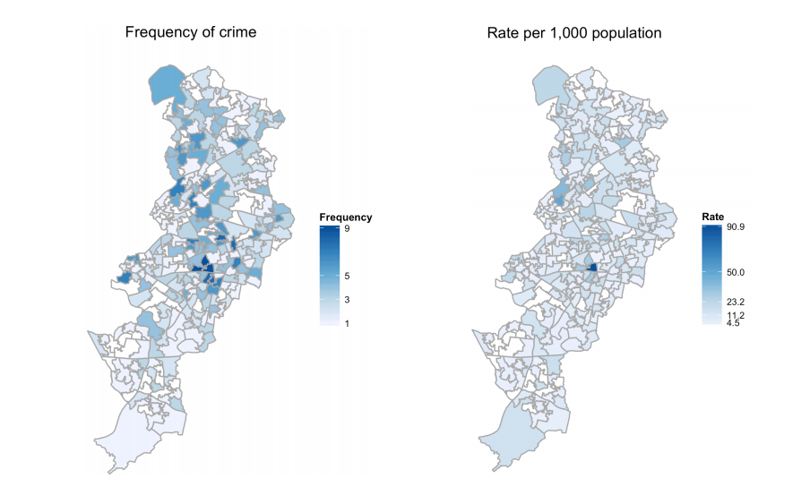
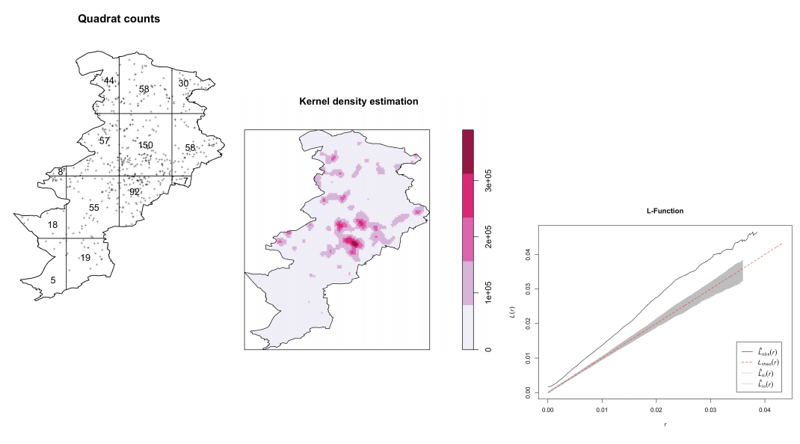
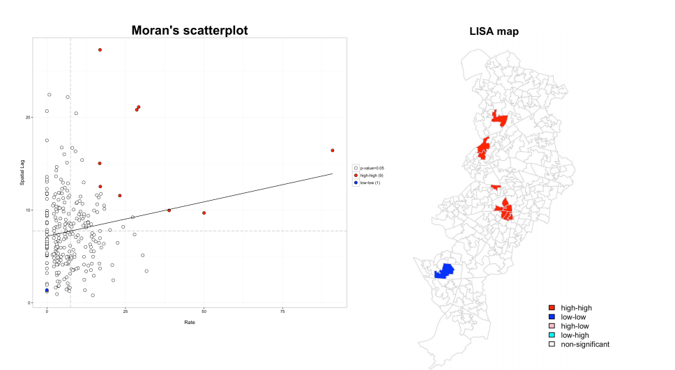
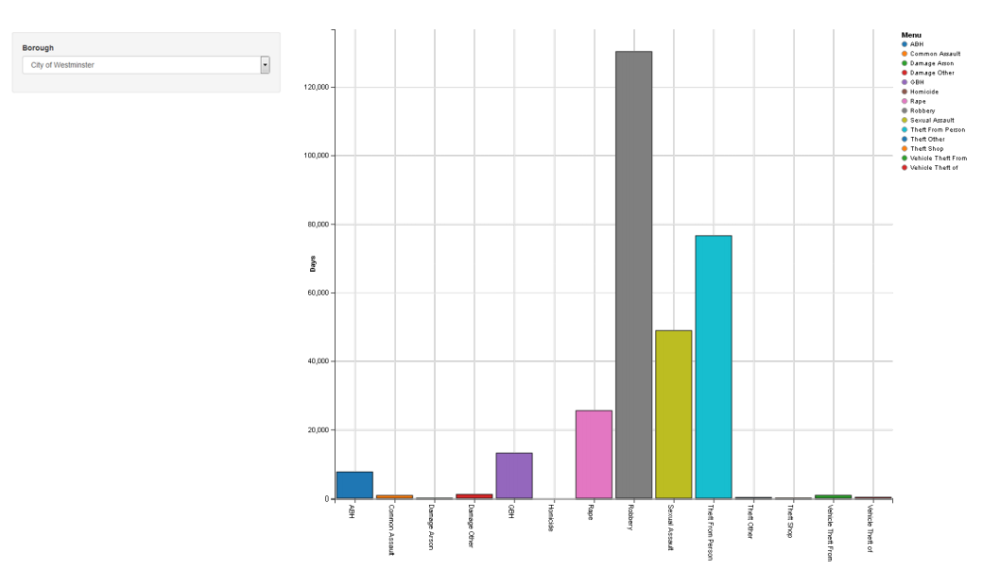
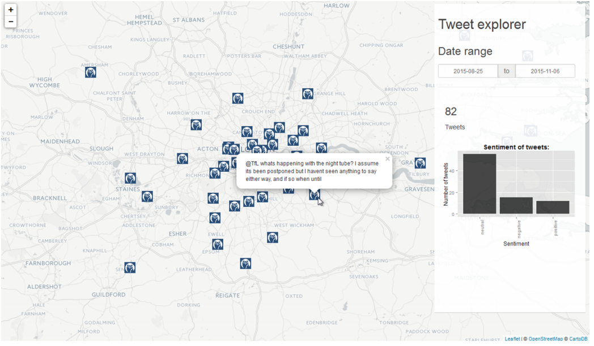
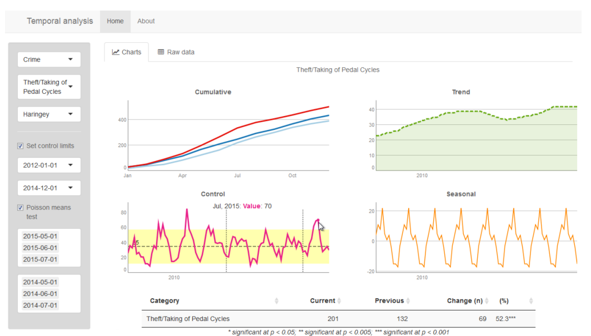
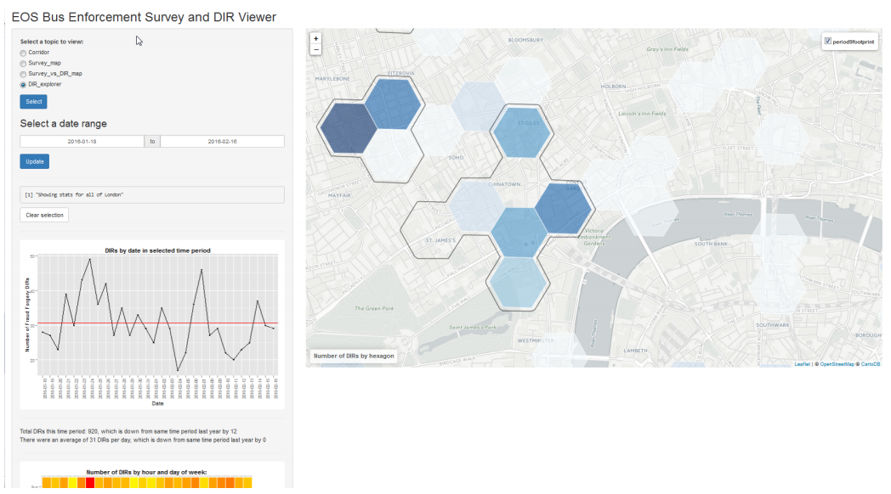
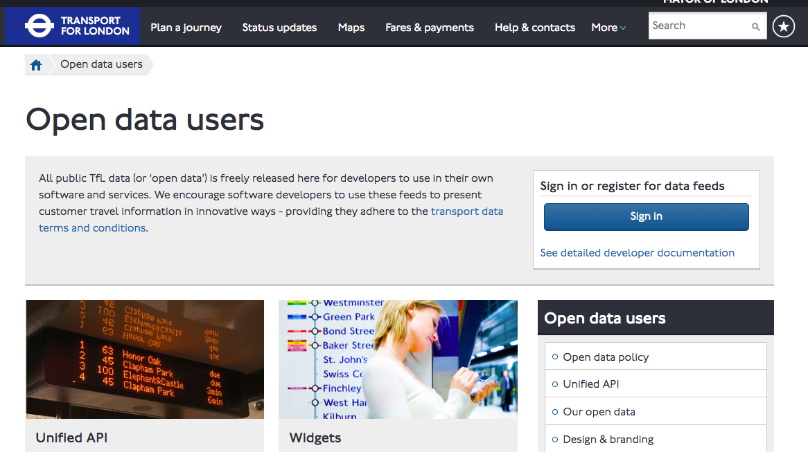
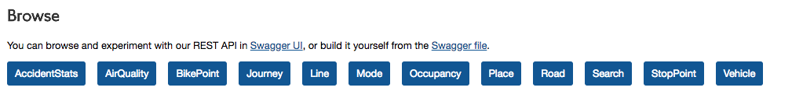
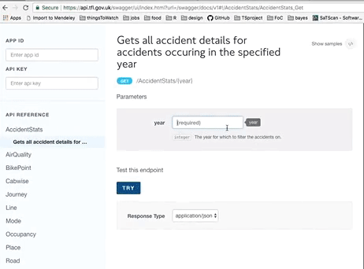

London Data at RLadies London
Reka Solymosi
29/05/2018
The transport system in London is a low-crime environment, and the risk of becoming a victim of crime while travelling on it is low.
In fact, the rate is under 8 crimes per 1 million passenger journeys
But…
Crime, antisocial behaviour and the fear of crime can affect on people’s willingness to travel and access jobs and services.
So we turn to data…
4 main ways we use(d) R
- Data cleaning
- Analysis
- Visualisation and mapping
- Shiny apps for dashboards
BUT FIRST
Working on R in closed systems
- Installation/ update issues
- Downloading packages
- Security concerns
- Training support
- User Group
- Lunchtime sessions
Example: TfL API
Normally:
library(jsonlite)
query_url <- "https://api.tfl.gov.uk/AccidentStats/2015?app_id=your_app_id_here&app_key=your_app_key_here"
d <- fromJSON(query_url)
accidents <- data.frame(lapply(as.data.frame(d), as.character), stringsAsFactors=FALSE)From inside firewall:
library(jsonlite)
query_url <- "https://api.tfl.gov.uk/AccidentStats/2015?app_id=your_app_id_here&app_key=your_app_key_here"
l <- readLines(query_url)
d <- fromJSON(l)
accidents <- data.frame(lapply(as.data.frame(d), as.character), stringsAsFactors=FALSE)But once we got it…
Choropleth maps
library(ggplot2)
Point pattern analysis
library(spatstat)
Spatial autocorrelation
library(spdep)
Aoristic analysis
library(aoristic)
Other types of analysis
- Geographic profiling - Rgeoprofile
- Crime series identification - crimelinkage
- Text mining - tm
- Network analysis - igraph
Shiny dashboards
- Pro tip: the best way to get senior management on board!
- Large initial time investment, but soon pays off
- Internal hosting can be a challenge
Estimate ‘harm’

Analyse tweets

Track trends

Monitor fare evasion

TfL Open Data
https://tfl.gov.uk/info-for/open-data-users/

Lots of topics

Get AccStats

In R: Set up API
library(httr)
library(jsonlite)
app_key <- "put app key here"
app_id <- "put app id here"
year <- "2015"In R: Build query and get data
queryString <- paste0("https://api.tfl.gov.uk/AccidentStats/",
year,
"?app_id=",
app_id,
"&app_key=",
app_key)
l <- readLines(queryString)
d <- fromJSON(l)
accidents <- data.frame(lapply(as.data.frame(d), as.character), stringsAsFactors=FALSE)In R
knitr::kable(head(accidents, n = 1), "html")| X.type | id | lat | lon | location | date | severity | borough | casualties | vehicles |
|---|---|---|---|---|---|---|---|---|---|
| Tfl.Api.Presentation.Entities.AccidentStats.AccidentDetail, Tfl.Api.Presentation.Entities | 243816 | 51.528712 | -0.202581 | Ashmore Road, junction with Shirland Road | 2015-06-04T20:25:00Z | Slight | City of Westminster |
list($type = “Tfl.Api.Presentation.Entities.AccidentStats.Casualty, Tfl.Api.Presentation.Entities”, age = 47, class = “Pedestrian”, severity = “Slight”, mode = “Pedestrian”, ageBand = “Adult”)
|
list($type = “Tfl.Api.Presentation.Entities.AccidentStats.Vehicle, Tfl.Api.Presentation.Entities”, type = “Car”)
|
Visualise
Get in touch!
- Email: reka.solymosi@manchester.ac.uk
- Twitter: @r_solymosi
- Methods at Manchester summer school
- http://www.methods.manchester.ac.uk/connect/events/summer-school/courses/
- Select: ‘Getting started with R…’